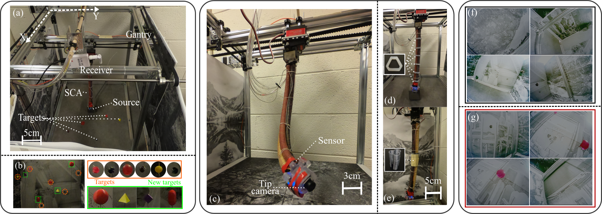

For soft continuum arms, visual servoing is a popular control strategy that relies on visual feedback to close the control loop. However, robust visual servoing is challenging as it requires reliable feature extraction from the image, accurate control models and sensors to perceive the shape of the arm, both of which can be hard to implement in a soft robot. This letter circumvents these challenges by presenting a deep neural network-based method to perform smooth and robust 3D positioning tasks on a soft arm by visual servoing using a camera mounted at the distal end of the arm. A convolutional neural network is trained to predict the actuations required to achieve the desired pose in a structured environment. Integrated and modular approaches for estimating the actuations from the image are proposed and are experimentally compared. A proportional control law is implemented to reduce the error between the desired and current image as seen by the camera. The model together with the proportional feedback control makes the described approach robust to several variations such as new targets, lighting, loads, and diminution of the soft arm. Furthermore, the model lends itself to be transferred to a new environment with minimal effort.

@article{kamtikar2022visual,
title={Visual servoing for pose control of soft continuum arm in a structured environment},
author={Kamtikar, Shivani and Marri, Samhita and Walt, Benjamin and Uppalapati, Naveen Kumar and Krishnan, Girish and Chowdhary, Girish},
journal={IEEE Robotics and Automation Letters},
volume={7},
number={2},
pages={5504--5511},
year={2022},
publisher={IEEE}
}